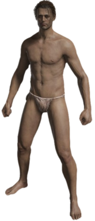
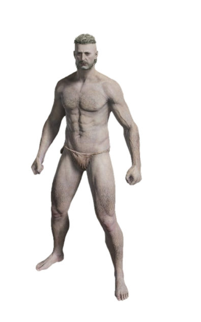
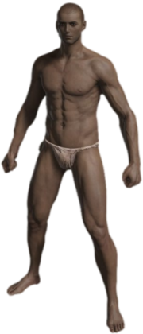
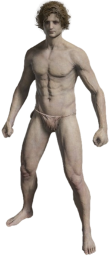
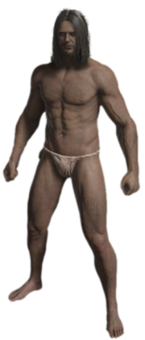
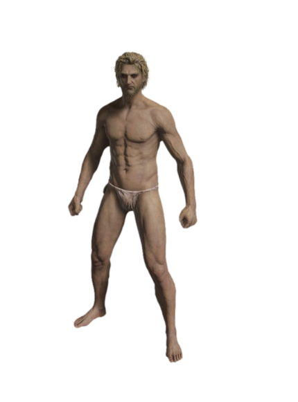
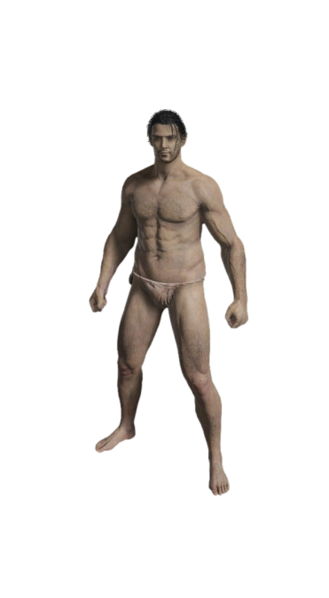
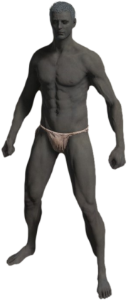
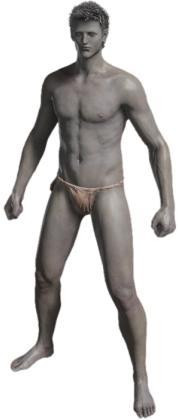
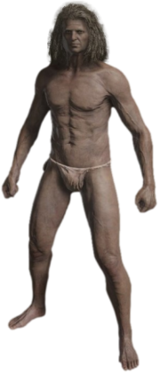

La creazione del personaggio permette ai giocatori di modellare e personalizzare il proprio personaggio. Durante la creazione, è possibile definire un grande varietà di caratteristiche che vanno dalla voce e struttura facciale alle caratteristiche che definiscono lo stile di gioco (come la Classe).
Gli attributi fondamentali che si possono definire sono NOME e Genere (definisce il genere del personaggio).
E’ possibile poi scegliere l’età apparente: Giovane, Adulto o Anziano. Questa opzione modifica solamente l’aspetto e non influenza le abilità.
Inoltre, è possibile avere un’anteprima sia dello Stato iniziale sia dell’aspetto del personaggio.
Oltre alle sezioni genere ed età, ve ne sono altre due che permettono di modellare ulteriormente il personaggio: scegli modello e dettagli.
La prima fornisce 10 aspetti preimpostati da cui scegliere; anche se ciascuno di questi mostra un breve descrizione, non rappresenta uno sfondo per il personaggio, ma più che altro una descrizione del tipo di personaggio rappresentato.
Ogni modello viene visualizzato con una descrizione del tipo di discendenza previsto. Tuttavia, questo non è uno sfondo per il personaggio stesso, non riflette alcun arco narrativo e non influenzerà il gameplay.
Guerriero
Uomo del nord
Cercatore di Verità
Aristogratico
Solitario
Navigatore
Abitante dei Giunchi
Draconiano
Notturno
Numen
La seconda presenta una grande varietà di controlli che permettono al giocatore di modificare il personaggio.
è possibile scegliere una delle 10 classi. la scelta fatta influenzerà l'equipaggiamento con cui si inizia l'avventura.
Ogni classe ha il proprio equipaggiamento e i propri oggetti di partenza.